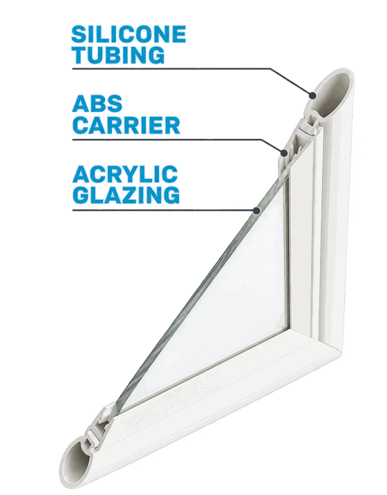
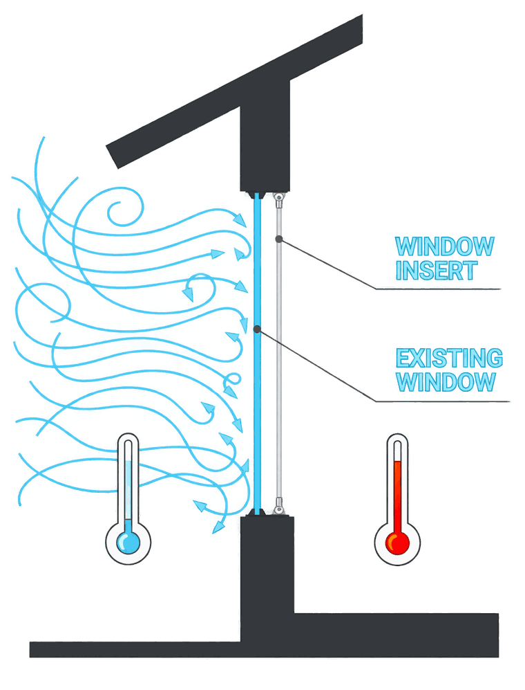
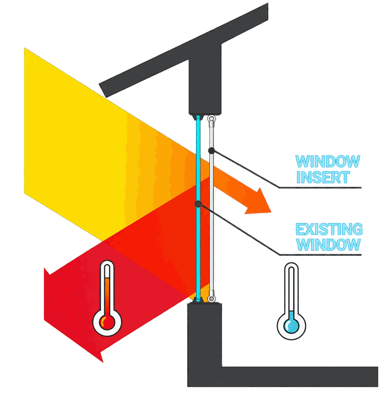
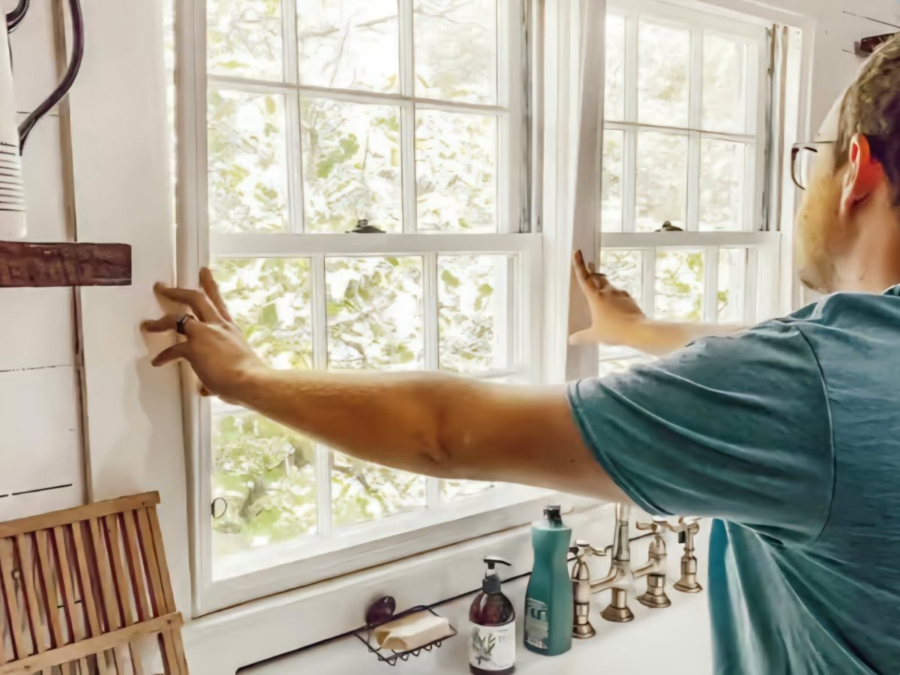
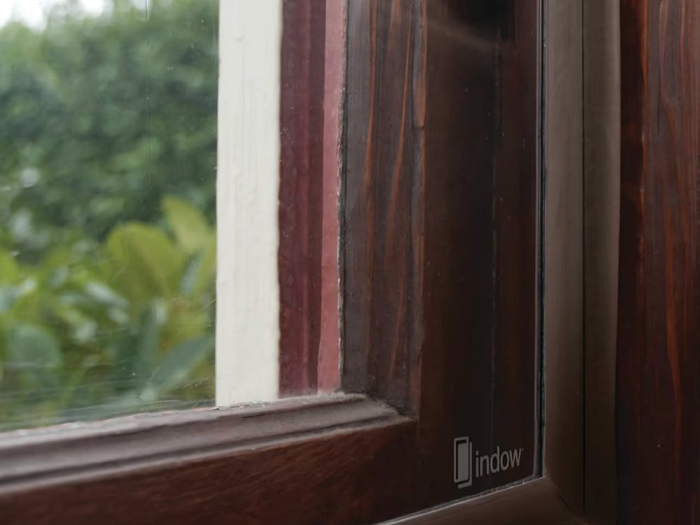
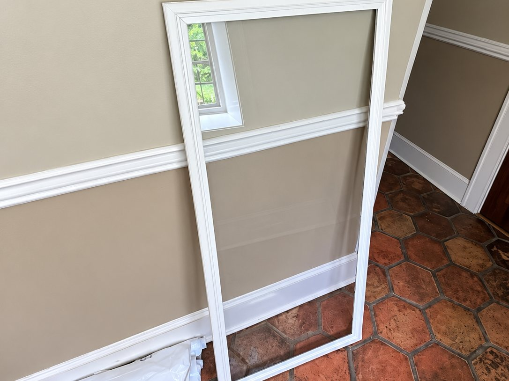
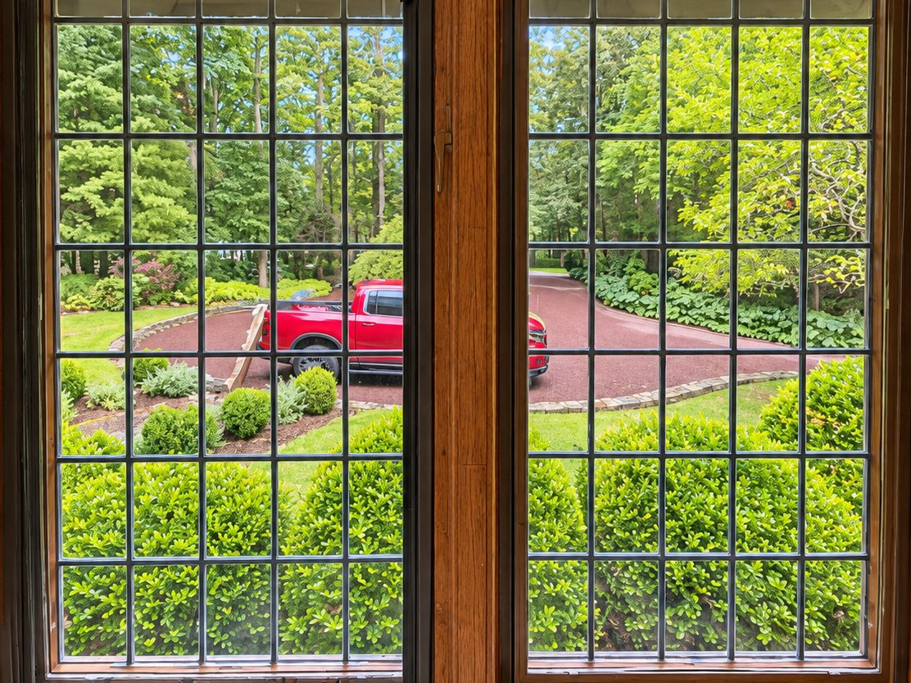
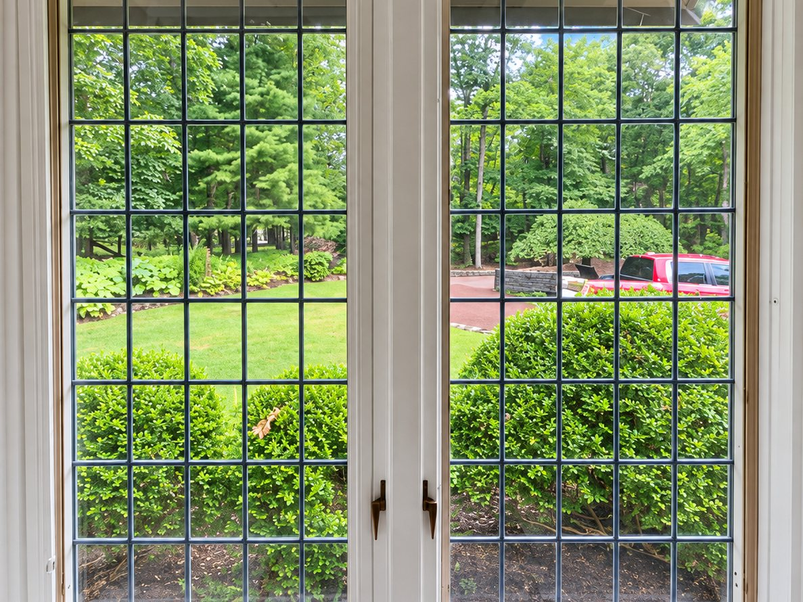

Window Inserts · Long Island · East End · NYC
Custom Window Inserts for Quieter, More Comfortable Rooms
Make the room quieter without replacing the windows. A custom-measured interior insert presses into the existing opening and seals against the frame, adding a second layer that helps reduce the outside noise coming through the window — and, with it, drafts and temperature transfer. Removable whenever you want.

Quieter rooms
Reduce the outside noise coming through your windows
Traffic, sirens and everyday street noise find their way indoors through windows — through the glass, and just as much through the gaps around an older sash. A custom-fit insert adds another sealed layer inside the existing opening, helping reduce the sound that makes it through the window without replacing the original window.
Up to 70% noise reduction
Indow Acoustic Grade inserts are designed to reduce outside noise by up to 70%. In Manhattan, Brooklyn and Queens the window is often the thinnest thing between you and the street; how much a room gains depends on its windows and the other paths sound takes in.
Average 20% energy savings
Indow reports average energy savings of 20% with its window inserts — fewer drafts and less heat moving through the glass, a second benefit you feel in winter and in summer.
Over 99% perfect fit rate
Indow reports a perfect-fit rate of over 99% for its custom-measured inserts, with its Snug Fit compression tubing sealing against the frame. Pellikal measures, supplies and installs; the original window is not modified.
Figures published by Indow for its inserts; the noise figure applies to Acoustic Grade. Not a guarantee of results in your room.
Already have double-pane windows? You can still get quieter. Double-pane glass already does some of the work, so the gain is smaller than on an older, thinner window — but a sealed insert adds another layer and closes the gaps around the sash, which is often where the noise is getting in.
Quieter, not silent. Sound also enters through walls, doors, ceilings and vents, so no window product makes a room soundproof. How much a room gains depends on the existing windows, the fit and those other paths. Not every opening suits an insert; the consultation determines fit.
What it's made of
Three parts, one tight seal
There is no frame to screw in and nothing fixed to your window. The insert holds itself in place by compression.
Silicone tubing
A soft compressible edge that runs the whole way around the panel. It squeezes into the opening and seals against the frame — this is what does the sealing, and why the measurements have to be right.
ABS carrier
The rigid channel that grips the glazing and holds the tubing in shape, so the edge keeps its seal instead of collapsing over time.
Acrylic glazing
The clear panel itself — lighter than glass, and what creates the pocket of still air between the insert and your existing window.
How it works
A sealed layer of still air
Most of the discomfort near an old window comes from two things: air leaking past the sash, and heat moving straight through the glass. A sealed insert addresses both, because still air is a poor conductor and a sealed edge gives moving air nowhere to get in.

Stopping the draft
Older sashes and loose-fitting windows leak air around the edges. That moving air is why a room can feel cold near the window even when the thermostat says otherwise, and why heating runs longer than it should.
The insert's compressible edge seals against the frame all the way around, so the leak path is closed off. The draft you feel sitting beside the window is the thing most clients notice first.
Slowing heat transfer
Glass conducts heat readily in both directions — out in winter, in during summer. Glass alone has very little to slow it down.
Adding a second layer traps a pocket of still air between the insert and your existing glass. Still air conducts heat poorly, so the transfer through the window slows and the temperature near the glass evens out.
Diagrams are illustrative of the principle. Actual results depend on the window, the frame, the insert selected and conditions outside.

Free & no-pressure
See If Window Inserts Are Right for Your Windows
Send us a few details about the windows giving you trouble and we’ll tell you whether inserts are the right fit.
- Free measurement and assessment
- No frames screwed in, nothing fixed to your window
- Removable in seconds, season by season
Prefer to talk it through?
Call or Text 516-336-9586Why have Pellikal handle it
An insert is only as good as its measurements
Inserts are made to order for one specific opening. Windows in older homes are rarely square, and a panel measured a fraction off either won't seal or won't fit. That's the part people get wrong doing it themselves.


- Consultation — which rooms, which windows, what you're trying to solve
- Professional measurement — each opening measured for a correct, sealed fit
- Product selection — the right insert for noise, drafts or both
- Ordering coordination — we place and track the order
- Fitting — installed, checked and demonstrated so you can remove and refit it yourself
One local company handles the whole process, and you're not left holding a panel that doesn't fit.

Example applications
Two insert installations
An insert sits inside the existing opening. You keep the window, you keep the light, and from outside nothing changes at all.


Two separate Pellikal installations — both already fitted with inserts. These are not a before-and-after of one opening. In each, the insert sits on the room side of the existing window; the original window is not modified.
What inserts help with
Noise, drafts and comfort
Results depend on the window, the frame, the insert selected and what's happening outside — but these are the problems people come to us with.
Outside noise
Traffic, street activity, neighbours, landscaping crews. The sealed second layer helps reduce the sound coming through the glass — often the reason people call us first.
Drafts
Older sashes and loose-fitting windows leak air. An insert that seals to the frame helps stop the draft you feel sitting near the window in winter.
Temperature transfer
The trapped air layer helps slow heat moving through the window in both directions — warmer near the glass in winter, less radiant heat in summer.
Room comfort
Bedrooms over a road, home offices, nurseries, rooms facing the water in winter — anywhere the window is the weak point of an otherwise comfortable room.
Insulation
Adds an insulating layer to existing glazing without any change to the window itself.
Keeping original windows
For historic homes and windows worth preserving, an insert improves comfort without replacing or permanently modifying the original.
Film or inserts?
Two different jobs. Sometimes both.
Window film and window inserts improve the windows you already have in different ways. They don't solve the same problem, and they can be used together.
Window film
Applied to the glass
- Solar heat
- Glare
- UV exposure
- Privacy
- Safety & security
- Appearance of the glass
Window inserts
Fitted inside the frame
- Outside noise
- Drafts
- Insulation
- Thermal comfort
- Removable interior solution
- Preserves the original window
Film + inserts
Complementary
A sunny room over a busy road might want film for the heat and glare and an insert for the noise. We'll tell you plainly which one — or both — actually addresses what you're describing.
Neither film nor inserts is a substitute for repairing damaged or failed glazing.
Common questions
Before you call
Does it change how the window looks?
An insert sits inside the frame behind the existing window. From inside, the glazing is set slightly further in; from outside, the window looks as it always did.
Can I still open the window?
You remove the insert first. It's designed to come out and go back in without tools. For windows you open daily, we'll talk through whether an insert is the right choice for that opening.
How much can window inserts reduce outside noise?
It depends on the window and the room. An insert adds a sealed second layer and an air gap inside the existing opening, which reduces the sound coming through the glass and — just as importantly — through the gaps around an older sash. Rooms facing traffic tend to notice the change most. Sound also enters through walls, doors, ceilings and other openings, so no insert makes a room silent. We assess your windows at the consultation and tell you honestly what to expect.
Do window inserts help if I already have double-pane windows?
Yes. Double-pane glass already does some of the work, so the improvement is smaller than on an older, thinner window — but a sealed insert adds another layer and closes the gaps around the sash, which is often where street noise gets in. The consultation is where we tell you what your particular windows can gain.
Is it permanent?
No. The insert is removable and the original window is not modified.
Private consultation
Quieter rooms, same windows.
Tell us which rooms and what you're hearing. We'll measure, recommend and handle the rest.